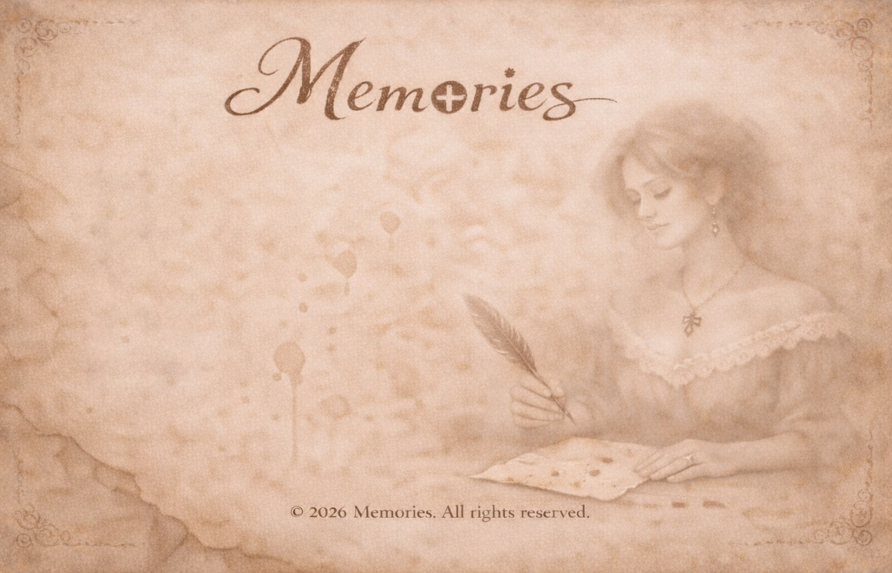

Теперь я часто думаю о том, Как далеко на юг от некой Тулы Меня ветрами дикими задуло, - Но верится, по-прежнему, с трудом. И стоя на пустынном берегу, Мне кажется, что это не со мною, Что это где-то в ближнем Подмосковьи, - Я просто перепутал на бегу. Я просто карты открывал не те, И в спешке находил не те названья, - Я пережил любовь и расставанье, И даже не заметил в суете. И вот я строю замки на снегу И упиваюсь горечью победы. Я пережил отца и даже деда, - Я много пережить еще смогу. И в этом вечном напряженьи жил Еще крепка ладонь и мысль упруга, - Я пережил почти в два раза друга, И родину два раза пережил, И сняв ее с себя будто серьгу, Оставил в сердце ран глубоких дыры. Я от нее бежал через полмира, - Но здесь ее дыханье стерегу.